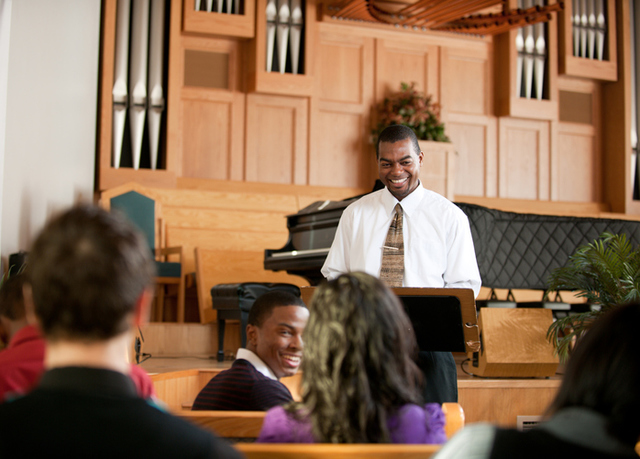

Bill Carpenter's Conversion Story
This is an MP3 recording that was ripped off an old tape cassette. It is the conversion story of a man who was in the process of becoming a Catholic Priest, but had some doubts. It is an inspiring story with a few amazing miracles. Click to Download Here
Audio download here
Missionary Work and The Atonement
This audio track comes from an Elder Holland talk. I heard it my first day in the field, and it is a great talk for understanding the why of missionary work.
Audio download here
Do We Really Know What We Have?
Do We Really Know What We Have? As written by Scott Anderson in his journal. We had an unexpected moment in the mission field. We knocked on a door and a lady said something to us we had never heard, “Come in”. Now remember, I was a German missionary. This never happened to us, not even the members would say that to us. At this point suddenly this dear lady invited us in. My companion said, “Do you know who we are?” “You want to talk religion, don’t you?” she said. “Yes we do” explained my companion.
“Oh, come in. I’ve watching you walk around the neighbourhood. I’m so excited to have you here. Please come into my study.” We went in and seated ourselves and she sat down behind the desk.
She looked at us with a smile, then pointed to three PhD’s hanging over her head. one in theology, the study of religion, one in Philosophy, the study of ideas, and one in European History specializing in Christianity. She then kind of rubbed her hands together and said, “Do you see this row of books here?” We looked at a well arranged row of books. She then said, “I wrote them all. I’m the Theology professor at the University of Munich. I’ve been doing this for 41 years. I love to talk about religion. What would you like to discuss?” My inspired companion said, ” we’d like to talk about the Book of Mormon.” She said,
“I don’t know anything about the Book of Mormon.” He said, “I know”. Twenty minutes later we walked out of the room. We had handed her a Book of Mormon and this trade off that we had been on was over. I didn’t see this lady for another 8 1/2 weeks.
It was a small room filled with people, {when I saw her again}, as she was standing in the front dressed in white. This Theology professor at the University of Munich was well known throughout Southern Germany. She stood up in front of this small congregation of people and said, “Before I’m baptized I’d like to tell you of my feelings. In Amos 8:11 it says, there will be a famine in the work of God. I’ve been in that famine for 76 years. Why do you think I have three PhD’s? I’ve been hungering for the truth and have been unable to find it. Then 8 1/2 weeks ago, two boys walked into my home. I want you to know these boys are very nice and wonderful young men, but they didn’t convert me. They couldn’t; they don’t know enough.” And then she smiled and said, “but since the day they walked in my door I have read the Book of Mormon, the Doctrine and Covenants, the Pearl of Great Price, all of Talmage’s great writings, Evidence and Reconciliations by John A. Widtsoe and 22 other volumes of Church Doctrine.” She then said something which I think is a challenge for everyone of us here. She said, ‘I don’t think you members know what you have.”
Then in her quiet, powerful way, she said, “After those years of studying philosophy, I picked up the D & C and read a few little verses that answered some of the greatest questions of Aristotle and Socrates! When I read those verses, I wept for 4 hours.” Then she said again, “I don’t think you members know what you have. Don’t you understand the world is in a famine? Don’t you know we are starving for what you have? I am like a starving person being led to a feast. And over these 8 1/2 weeks I have been able to feast in a way I have never known possible.”
Her powerful message and her challenging question was then ended with her favourite scripture, “For you don’t see the truth can make you free.”
She said, “these missionaries don’t just carry membership in the church in their hands, they carry within their hands the power to make the atonement of Jesus Christ full force in my life. Today I’m going into the water and I’m going to make a covenant with Christ for the first time with proper authority. I’ve wanted to do this all my life.” None of us will forget the day she was baptized. When she got finished being baptized, she got back out and before she received the Holy Ghost , she stood and said, “Now I would like to talk about the Holy Ghost for awhile.” She then gave a wonderful talk about the gift of the Holy Ghost.
{Later in Elder Anderson’s journal}
Two young missionaries, both relatively new, {one had been out about 5 months, the other 3 weeks}, accidentally knocked of the door of the seminary in Regensburg. 125 wonderful men were studying to become priests inside. They didn’t realize this was the door they had knocked on because it looked like any other door. They were invited in. In somewhat of a panic, the man said, “I am sorry we just don’t have time right now.” The 2 missionaries were relieved, but then he said, “Would you come back next Tuesday and spend 2 hours addressing all 125 of us and answer questions about your church?” They agreed that they would, and ran down the road screaming. They made a phone call to their mission president and cried for help. The mission president called us and said, “Do you think that dear lady that you have just brought into the church would like to come help these 2 missionaries with this assignment?” I called her to explain what was to happen, and she said, “more than I would like to eat, more than I would like to sleep, more than…” I said, “Fine, you don’t have to explain.”
We drove her to the seminary, and as we went in, she grabbed the 2 missionaries that had originally been invited, put her arms around them and said, “you are wonderful young men. Would each of you spend about 2 minutes bearing your testimony and then sit down and be quiet please?”
They were grateful for their assignment. they bore their testimony and then seated themselves. Then she got up and said, “For the next 30 minutes I would like to talk to you about historical apostasy.” She knew every date and fact. She had a PhD in this. She talked abut everything that had been taken away from the great teachings the Saviour had given, mostly organizational, in the first part of her talk. the next 45 minutes were doctrinal.
She gave every point of doctrinal changes, when it happened and what had changed. By the time she was done, she looked at them and said, “In 1820 a boy walked into a grove of trees. He had been in a famine just like I have been. He knelt to pray, because he was hungry just like I have been. He saw God the Father and His Son. I know this is hard for you to believe that they could be two separate beings, but I know they are.” she shared scriptures that showed that they were and then said, “I would like to talk about historical restoration of truth.” she then, point by point, date by date, from the Doctrine and Covenants, put back the organizational structure of Christ’s church. The last 20 minutes of her talk were absolutely brilliant. For the first time we realized that she had been their Theology professor. She continued by saying, “Last year when I was teaching you, I told you that I was still in a famine.
I have been led to a feast. I invite you to come.” she finished with her testimony and sat down. What happened next was hard for me to understand. These 125 sincere, wonderful men stood and for the next 7 minutes, gave her a standing ovation. By the time 4 minutes had gone by I was crying. I remember standing and looking into their eyes and seeing the tears in their eyes too. I wondered why they were applauding after the message she had given. I asked many of them later. They said, “to hear someone so unashamed of the truth, to hear someone teaching with such power, to hear someone who finally has conviction.”
The truth is what can set us free…Do we really know what we have?
The sister in this story is Gertrude Specht and she was a real person. She was baptized at the age of 75. She also spent a lot of time and effort doing missionary work. A 1973 Ensign article mentioned her efforts in creating a large conference to help introduce people to the LDS Church. The following is taken from this article:
As a young woman Gertrud Specht attended the University of Munich from which she obtained a doctorate degree in economics. Later, while doing historical research, she became interested in genealogical work and spent a great deal of time collecting information concerning her ancestors without knowing why it was so important. She has always had a burning desire to learn. She speaks six languages and is currently, at the age of 78, enrolled in philosophy classes at the university. Because a doctorate degree is so respected in German society, she has been able to open many doors to the Church since her baptism. She was set apart as a district missionary and has helped many people gain testimonies of the gospel. She always attends their baptisms.
Sister Specht remarked that three years ago her life seemed all but over, but then came her conversion to the true church. She has been a member less than three years, having been baptized shortly before her 75th birthday. Now, she says, her life has “expanded to tremendous proportions.”
Working with the press relations, she spent countless hours preparing for the conference. When she is asked where she gets her energy and how she keeps going the way she does, she answers that she can only stay healthy when she has a pressing reason for living and that there is nothing more worthwhile than living to serve the Lord.
Because of her efforts many favorable articles concerning the Church have appeared in German newspapers. Typical of these was an article that appeared in the Munchner Merkur on Friday, August 24. The article was headed “What Joseph Smith Saw Through Prophetic Glasses,” and went into some detail about the Church, the conference, and the Tabernacle Choir, but it began with two paragraphs about Sister Specht:
“She is resolved, full of grandmotherly grace, and when she speaks of her religion, her enthusiasm is that of a young girl’s. Mrs. Doctor Gertrud Specht (‘In my youth I studied political science, then history, and now I am studying philosophical theory and logic at the university.’) is 77 years old and is public relations director of the Munich Branch of the Mormon Church.
“ ‘I was a good Catholic,’ Mrs. Doctor Specht said, ‘but I found myself in a crisis. I just couldn’t accept certain doctrines. Then I heard about the Mormons. They showed me what I felt, to be right, so I was baptized.’
In the year 2000, Professor Daniel Peterson, the Director of FARMS (Foundation for Ancient Research and Mormon Studies at BYU) received this email and asked Marc A. Schindler (who once was Gertrude Specht’s home teacher) to verify the story. Although he was not there when Sister Specht was converted and could not authenticate the story, he said that the journal enrty from Elder Anderson is close to the story he remembers Sister Specht telling him about her conversion. Some facts may have been embellished, but he felt the majority of the story was accurate.
Gertrude Specht died in 1986.
I Found My Friend!
The following even took place in a ward in Salt Lake City in 1974. It happened during Sacrament Meeting and it was told by a representative of the Twelve Apostles who was in the meeting. A young man, wh owas just about to depart for his mission stood up in Sacrament and shared in essence the following testimony:
"Brothers and Sisters, as you know during the last few weeks I have been waiting for my mission call. During the time in which I was waiting I had a dream. I know that it wasn't an ordinary dream. I dreamt that I was in the Pre-Existence and was waiting for my calling to go to Earth. The same emotion and anticipation that I had before I received my mission call filled me."
"In my dream I was speaking with my friend; he was a very beloved friend and I felt a special closeness about him, even more than I had known in this life. While we were speaking, a messenger came and gave me a letter. I knew that it was my calling to go to Earth."
"With great emotion, my friend and I opened the letter. I gave it to him and asked him to read it out loud. The letter said: 'You have been called to go to the Earth in a special time and a special country. You will be born in the true Church and have the Priesthood of God in your home. You will grow with many blessings and advantages. You will be born in an abundant land, a land of Liberty. You will go to the Earth, to the United States of America.'"
"My friend and I rejoiced while we read my calling and while we were rejoicing, the messenger returned. In this occasion he brough a letter for my friend. We knew that it was his calling to go to the Earth. My friend gave me the letter to read out loud. The letter said: 'You have been called to go to Earth in circumstances of poverty and conflicts. You won't be born in the true Church. A lot of suffering will come to pass in your life. Your country will be involved in political and social difficulties, which will hinder the work of the Lord. You will be born in Costa Rica.'"
"We cried, my friend and I, while we read the calling. And my friend looked at me with tears in his eyes and said, 'When we are down there on Earth, you in your chosen land and me in Costa Rica, my friend, please come and find me.'"
Then this young missionary, with tears in his eyes said: "Brothers and Sisters, I have received my mission call. I'm going to Costa Rica."
One year after this Sacramental Service the Bishop of that ward received a letter from the missionary in Costa Rica. The letter had only one piece of paper and written in big letter were the following words...
I FOUND MY FRIEND!